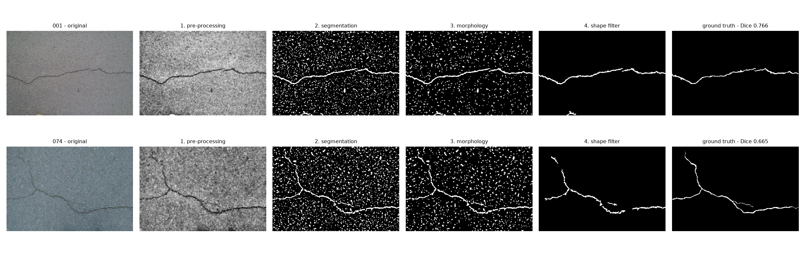
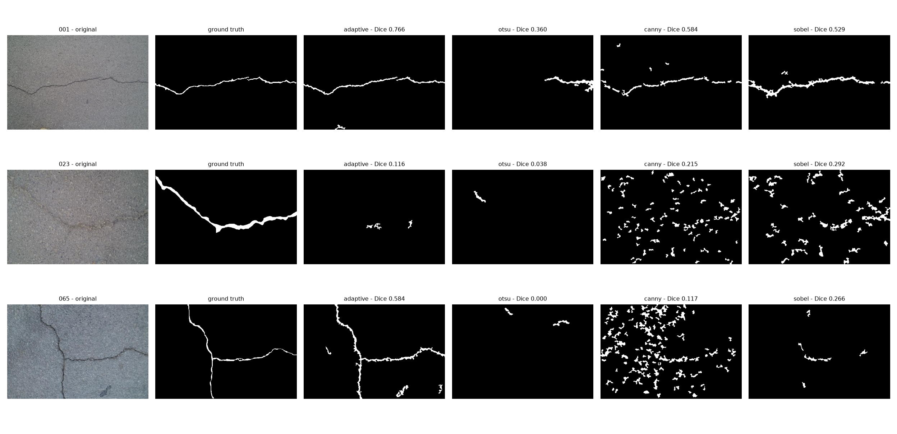
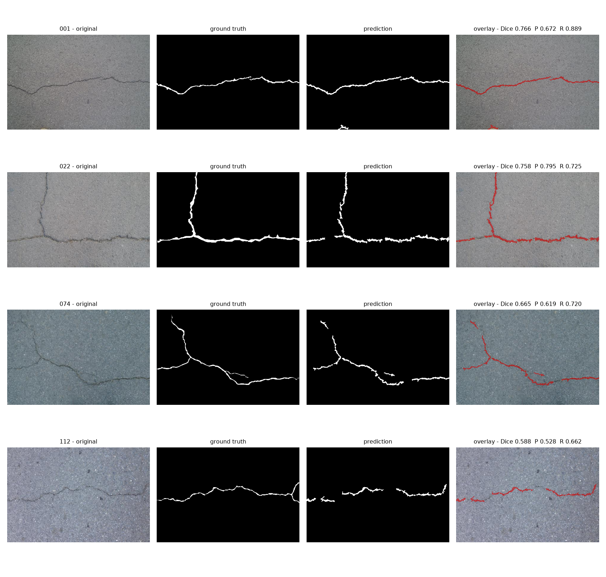
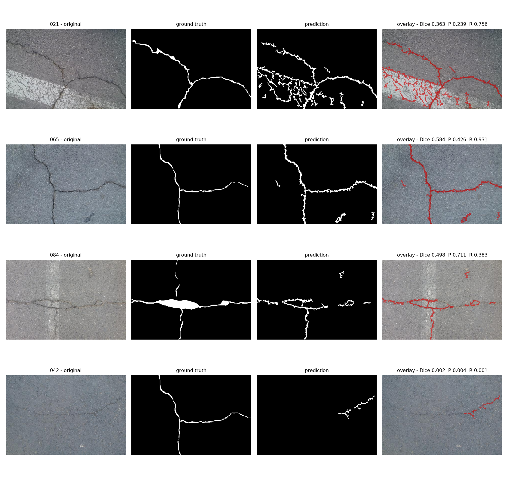

TN
17,538,560
ระบบใช้ไปป์ไลน์ 4 ขั้นตอน — ปรับภาพ, แยกพิกเซลด้วย Adaptive Thresholding, จัดการด้วย Morphology และกรองด้วยรูปทรง — ได้ Dice 0.5024 / IoU 0.3533 บนภาพจริงทั้ง 118 ภาพ ดีขึ้นจากค่าเริ่มต้น 0.3201 / 0.2051
ตัวเลขที่รายงานทุกค่าเลือกพารามิเตอร์จากภาพฝึก 59 ภาพ แล้ววัดผลบนภาพที่กันไว้อีก 59 ภาพ ซึ่งไม่เคยถูกใช้ในการค้นหาเลย (Dice 0.5105 บนชุดที่กันไว้) จึงไม่ใช่ตัวเลขที่จูนมาเข้ากับข้อสอบของตัวเอง
ข้อค้นพบสำคัญ 3 อย่างจากการทดลอง:
เหตุการณ์แผ่นดินไหวที่ส่งผลกระทบต่อประเทศไทยในปีที่ผ่านมาทำให้เกิดความตื่นตัวเรื่องความปลอดภัย ของอาคารและโครงสร้างพื้นฐานอย่างกว้างขวาง รอยร้าวบนผนังหรือเสาคอนกรีตเป็นหนึ่งในสัญญาณเตือน แรกสุดของการเสื่อมสภาพเชิงโครงสร้าง
การตรวจสอบด้วยสายตามนุษย์ (Visual Inspection) ยังเป็นวิธีหลักในปัจจุบัน แต่เมื่อพื้นที่ตรวจสอบ มีขนาดใหญ่หรืออยู่ในจุดที่เข้าถึงยาก วิธีนี้ใช้เวลานาน มีต้นทุนสูง และผลลัพธ์ขึ้นกับประสบการณ์ ของผู้ตรวจแต่ละคน จึงเกิดแนวคิดที่จะให้คอมพิวเตอร์ช่วยวิเคราะห์ภาพถ่ายพื้นผิว เพื่อคัดกรองเบื้องต้น ว่าบริเวณใดควรให้วิศวกรเข้าไปตรวจสอบซ้ำ
พัฒนาระบบประมวลผลภาพที่ตรวจจับและดึงลักษณะเส้นของรอยร้าวบนพื้นผิวคอนกรีตออกมาได้อัตโนมัติ โดยต้องแยกแยะระหว่าง รอยร้าวที่เกิดจากความเสียหายเชิงโครงสร้าง กับ พื้นผิวขรุขระปกติ รูพรุน หรือรอยเปื้อน ให้ได้
เงื่อนไขสำคัญของงานนี้คือใช้เทคนิคการประมวลผลภาพแบบดั้งเดิมเท่านั้น ไม่ใช้โมเดล Deep Learning เพื่อให้ทุกขั้นตอนอธิบายได้ด้วยคณิตศาสตร์ของการจัดการภาพ และเพื่อให้เห็นว่าแต่ละเทคนิค ให้ผลเท่าไรเมื่อวัดอย่างเป็นระบบ
| หัวข้อ | ขอบเขต |
|---|---|
| เป้าหมาย | โปรแกรมต้นแบบที่รับภาพถ่ายพื้นผิวแล้วไฮไลต์บริเวณที่เป็นรอยร้าว พร้อมวัดผลเทียบภาพเฉลยได้ |
| ข้อมูล | CrackForest (CFD) 118 ภาพ ขนาด 480×320 พิกเซล มีภาพเฉลยระดับพิกเซล เก็บเป็นไฟล์ MATLAB .mat แปลงเป็น PNG ด้วย src/prepare_crackforest.py |
| เทคนิค | Traditional Image Processing ล้วน (OpenCV) ไม่ใช้ Deep Learning |
| การแบ่งงาน | คนที่ 1 การเตรียมภาพ · คนที่ 2 อัลกอริทึมและการปรับจูน · คนที่ 3 การวัดผลและสรุปผล |
| นอกขอบเขต | การประเมินความรุนแรงของรอยร้าว การวัดความกว้างเป็นหน่วยจริง และการทำงานบนวิดีโอแบบเรียลไทม์ |
CrackForest เป็นภาพผิวถนนในเมือง ไม่ใช่ผิวคอนกรีตในอาคาร ผิวถนนมี texture ของยางมะตอย คราบ และเงาที่ไม่สม่ำเสมอ ซึ่งยากกว่าภาพคอนกรีตระยะใกล้ที่ถ่ายในแสงควบคุม ตัวเลขที่ได้จึงควรอ่านในฐานะผลบนกรณีที่ยาก ไม่ใช่เพดานของวิธี
งานตรวจจับรอยร้าวด้วยการประมวลผลภาพแบบดั้งเดิมแบ่งได้เป็นสองสายหลัก คือ สายที่ใช้ค่าขีดแบ่งความสว่าง (Threshold-based) ซึ่งอาศัยข้อเท็จจริงที่ว่ารอยร้าวมืดกว่าผิวรอบข้าง และ สายที่ใช้ขอบภาพ (Edge-based) ซึ่งอาศัยการเปลี่ยนความสว่างอย่างฉับพลันบริเวณขอบรอยร้าว โครงงานนี้เลือกสายแรกเป็นวิธีหลัก และนำสายที่สองมาวัดเทียบด้วยการทดลองของตัวเอง (หัวข้อ 6)
| เอกสาร | บทบาทต่อโครงงาน |
|---|---|
| Dorafshan, Maguire & Qi (2016) Automatic Surface Crack Detection in Concrete Structures Using OTSU Thresholding and Morphological Operations |
เปเปอร์หลักที่โครงงานนี้เดินตาม เสนอการใช้ Otsu thresholding ร่วมกับ morphological operations บนภาพผิวคอนกรีต เป็นที่มาของโครงไปป์ไลน์ threshold → morphology → กรองรูปทรง |
| Huang et al. (2025) A review of the progress in machine vision-based crack detection and identification technology for asphalt pavements |
บทความปริทัศน์ ระบุว่าเทคนิคดั้งเดิม (thresholding, Sobel/Canny/Prewitt, morphological operations) ทำงานได้ดีเมื่อพื้นหลังไม่ซับซ้อน แต่ มีความทนทานต่ำเมื่อแสงและพื้นหลังซับซ้อน ขณะที่ Deep Learning รับมือได้ดีกว่าแต่ต้องใช้ข้อมูลที่มีเฉลยจำนวนมากและทรัพยากรคำนวณสูง |
| Han et al. (2021) An Advanced Otsu Method Integrated with Edge Detection and Decision Tree for Crack Detection in Highway Transportation Infrastructure |
ตัวอย่างงานที่ผสม Otsu เข้ากับการตรวจจับขอบ แสดงว่าทั้งสองสายไม่จำเป็นต้องแยกจากกัน |
| Image Segmentation for Pavement Crack Detection System และ Pavement crack detection using Otsu thresholding for image segmentation (2018) |
งานฝั่ง Otsu บนผิวถนนโดยเฉพาะ ใช้เทียบเคียงกับผลการทดลองของโครงงานนี้ที่พบว่า Otsu ทำงานได้ไม่ดีบน CrackForest |
ประเด็นที่บทความปริทัศน์ชี้ไว้ — ว่าเทคนิคดั้งเดิมอ่อนแอเมื่อแสงไม่สม่ำเสมอ — ตรงกับสิ่งที่วัดได้จริง ในโครงงานนี้ Otsu ซึ่งใช้ค่าขีดแบ่งค่าเดียวทั้งภาพ ได้ Dice เพียง 0.2428 ขณะที่ Adaptive Thresholding ซึ่งเทียบพิกเซลกับเพื่อนบ้านในหน้าต่างเล็ก ๆ ได้ 0.5024 ความต่างนี้คือเหตุผลเชิงตัวเลขของการเลือกวิธีหลัก
ไปป์ไลน์แบ่งเป็น 4 ขั้นตอน แต่ละขั้นเขียนแยกเป็นไฟล์ของตัวเองใน src/
และเชื่อมต่อกันใน src/pipeline.py

แปลงภาพสีเป็นภาพระดับเทา ลดสัญญาณรบกวนด้วย Gaussian Blur ขนาด 5×5 แล้วเพิ่ม contrast เฉพาะที่ด้วย CLAHE (clip limit 2.0, tile 8×8) ขั้นตอนนี้ทำให้รอยร้าวสีเข้มตัดกับผิวรอบข้างชัดขึ้นก่อนเข้าสู่การแยกพิกเซล
ใช้ Adaptive Thresholding แบบ Gaussian หน้าต่าง 35×35 ค่าชดเชย C = 15 หลักการคือเทียบความสว่างของแต่ละพิกเซลกับค่าเฉลี่ยของเพื่อนบ้านในหน้าต่าง ไม่ใช่กับทั้งภาพ พิกเซลที่มืดกว่าเพื่อนบ้านเกินค่า C จะถูกนับเป็นรอยร้าว วิธีนี้จึงไม่สนใจว่าโดยรวมภาพนั้นสว่างหรือมืด ทำให้ทนต่อเงาและแสงไม่สม่ำเสมอ
ใช้ Closing (ขยายแล้วหด) ด้วย kernel วงรีขนาด 3×3 เพื่อเชื่อมรอยร้าวที่ขาดเป็นช่วง ๆ ให้ต่อกัน ตามด้วย Opening (หดแล้วขยาย) ขนาด 3×3 เพื่อลบจุดรบกวนเล็ก ๆ ที่ไม่ใช่รอยร้าว
ดึง connected component ที่เหลือแล้วกรองด้วยเกณฑ์สองข้อ: พื้นที่ (นับจำนวนพิกเซลจริง ต้องไม่น้อยกว่า 120 พิกเซล) และ ความเรียว วัดด้วย circularity
# ยิ่งค่าน้อย ยิ่งเรียว — วงกลมสมบูรณ์ได้ค่า 1.0 circularity = 4 · π · area / perimeter² # เก็บไว้เมื่อ ≤ 0.4
จุดสำคัญคือ circularity ไม่ขึ้นกับความโค้งของรอยร้าว รอยร้าวที่เป็นรูปตัว T หรือแตกแขนง ก็ยังได้ค่าต่ำเพราะมันเรียวจริง ซึ่งต่างจากเกณฑ์ที่ใช้ในตอนแรก (รายละเอียดในหัวข้อ 6)
ค่าทั้งหมดได้จากการค้นหาแบบ grid search ไม่ได้ตั้งด้วยการเดา เก็บไว้ใน
outputs/tuned_params.json และโหลดอัตโนมัติตอนรัน
ความคาดหวังตั้งแต่ต้นคือให้ระบบสร้าง binary mask ที่ไฮไลต์เฉพาะเส้นรอยร้าว และกรอง noise จากความขรุขระ รูพรุน และเงาออกได้ระดับหนึ่ง ผลที่ได้เป็นไปตามนั้น แต่มีเงื่อนไขที่ต้องอธิบาย
การจูนพารามิเตอร์บนภาพชุดเดียวกับที่ใช้วัดผลจะทำให้ได้ตัวเลขที่สูงเกินจริง โครงงานนี้จึงแบ่งภาพ 118 ภาพออกเป็นสองส่วนแบบสลับกัน (ภาพเว้นภาพ เพื่อให้ทั้งสองฝั่ง กระจายทั่วชุดข้อมูล) ค้นหาพารามิเตอร์จาก 59 ภาพแรก และวัดผลบน 59 ภาพที่เหลือ ซึ่งไม่เคยถูกแตะระหว่างการค้นหา
นอกจากนี้ เมื่อทดลองถึงเกือบ 5,000 ชุดพารามิเตอร์ ชุดที่ได้คะแนนสูงสุดมักเป็นชุดที่
"ฟลุก" กับภาพไม่กี่ภาพ จึงไม่เลือกด้วยคะแนนสูงสุดตรง ๆ แต่แบ่งภาพฝึกเป็น 5 กลุ่ม
แล้วเลือกชุดที่ได้คะแนน ค่าเฉลี่ย − ส่วนเบี่ยงเบน สูงสุด คือเลือกชุดที่ทั้งดีและนิ่ง
ผลคือช่องว่างระหว่างคะแนนบนภาพฝึกกับภาพที่กันไว้เหลือเพียง 0.001 (เทียบกับ 0.040 ในรอบแรกที่ยังจูนแบบไม่แบ่งชุด)
Dice บนภาพจริงทั้ง 118 ภาพ ตามรอบการปรับจูน
ค่าเฉลี่ยแบบ macro คือเฉลี่ยคะแนนของแต่ละภาพ ทุกภาพมีน้ำหนักเท่ากัน
| Metric | ค่าเริ่มต้น | รอบที่ 1 | รอบที่ 2 | รอบที่ 3 | เปลี่ยนแปลง |
|---|---|---|---|---|---|
| Precision | 0.2479 | 0.5349 | 0.4990 | 0.5273 | +0.279 |
| Recall | 0.5982 | 0.5194 | 0.5781 | 0.5732 | −0.025 |
| IoU | 0.2051 | 0.3399 | 0.3492 | 0.3533 | +0.148 |
| Dice (F1) | 0.3201 | 0.4872 | 0.4991 | 0.5024 | +0.182 |
สิ่งที่เปลี่ยนมากที่สุดคือ precision ที่เพิ่มกว่าเท่าตัว หมายความว่าระบบเลิกทายพื้นผิวธรรมดา ว่าเป็นรอยร้าว ขณะที่ recall ลดลงเพียงเล็กน้อย
เพื่อให้การเปรียบเทียบเป็นธรรม ทุกวิธีถูกค้นหาพารามิเตอร์ของตัวเองด้วยกระบวนการเดียวกัน และเปิดใช้งานครบทั้ง 4 ขั้นตอนเหมือนกัน
Dice บนภาพที่กันไว้ 59 ภาพ แยกตามวิธีแยกพิกเซล
แต่ละวิธีจูนพารามิเตอร์ของ morphology และการกรองรูปทรงเป็นของตัวเอง
| วิธี | Dice (กันไว้) | Dice (118 ภาพ) | มัธยฐาน | ภาพที่ Dice ≥ 0.5 | ชนะขาด | False positive |
|---|---|---|---|---|---|---|
| Adaptive Thresholding | 0.5105 | 0.5024 | 0.5427 | 73 | 102 | 171,802 |
| Sobel | 0.3159 | 0.2927 | 0.2759 | 14 | 8 | 463,628 |
| Otsu | 0.2257 | 0.2428 | 0.2540 | 9 | 5 | 392,289 |
| Canny | 0.2237 | 0.2107 | 0.1865 | 9 | 3 | 1,457,995 |

เหตุผลที่ผลออกมาเช่นนี้ — Canny และ Sobel ตอบสนองต่อการเปลี่ยนความสว่างอย่างฉับพลัน ซึ่งบนผิวถนนมีอยู่ทั่วไปจาก texture ของยางมะตอย ขอบคราบ และเงา ทั้งหมดนี้ให้ gradient แรงพอ ๆ กับขอบรอยร้าว ส่วน Otsu หาค่าขีดแบ่งค่าเดียวสำหรับทั้งภาพ จึงตัดเอาบริเวณ ที่มืดกว่าค่าเฉลี่ย เช่น เงา มาเป็นรอยร้าวด้วย
เปเปอร์อ้างอิงใช้ Otsu แล้วได้ผลดี ซึ่งดูขัดกับผลที่วัดได้ที่นี่ แต่เปเปอร์นั้นทำกับ ภาพผิวคอนกรีตระยะใกล้ในสภาพแสงที่ควบคุมได้ ขณะที่ CrackForest เป็นผิวถนนในเมือง ผลที่ต่างกันจึงไม่ได้ขัดกับเปเปอร์ แต่สะท้อนว่าเงื่อนไขการถ่ายภาพเป็นตัวกำหนดว่า global threshold ใช้ได้หรือไม่ ซึ่งเป็นข้อสรุปที่มีน้ำหนักกว่าการบอกว่าวิธีใดดีกว่าโดยรวม
ในสองรอบแรก ขั้นที่ 4 วัดความเรียวด้วยอัตราส่วนด้านของกรอบสี่เหลี่ยมหมุนได้ ที่ครอบ contour ไว้ ซึ่งตั้งอยู่บนสมมติฐานเงียบ ๆ ว่ารอยร้าวเป็นเส้นตรง
แต่รอยร้าวจริงโค้งและแตกแขนง รอยร้าวรูปตัว T จะมีกรอบครอบเกือบเป็นสี่เหลี่ยมจัตุรัส ได้อัตราส่วนใกล้ 1 แล้วถูกตัดทิ้งทั้งเส้น ทั้งที่มันเรียวมาก เมื่อวัดทั้งชุดข้อมูลพบว่าขั้นที่ 4 ตัดพิกเซลรอยร้าวจริงที่สามขั้นตอนแรกหาเจอแล้วทิ้งไปถึง 30.5%
เกณฑ์กรองรูปทรงแบบใดให้ผลดีที่สุด
Dice สูงสุดที่ทำได้บนภาพฝึก จากการค้นหา 4,800 ชุดพารามิเตอร์ที่มีทั้งสองเกณฑ์อยู่ด้วยกัน
ผลที่สำคัญที่สุดไม่ใช่แค่ว่าเกณฑ์ใหม่ชนะ แต่คือ เกณฑ์เดิมแย่กว่าการไม่กรองรูปทรงเลย (0.4997 เทียบกับ 0.5201) แปลว่าตลอดสองรอบแรก ขั้นตอนที่ 4 ในส่วนของการวิเคราะห์รูปทรง ทำให้ผลแย่ลง ไม่ใช่ดีขึ้น ส่วนเกณฑ์ใหม่ดีกว่าการไม่กรอง (0.5243) จึงเป็นครั้งแรก ที่ขั้นตอนนี้มีเหตุผลเชิงตัวเลขรองรับการมีอยู่ของมัน
| ภาพ | Dice เดิม | Dice ใหม่ | Recall เดิม | Recall ใหม่ |
|---|---|---|---|---|
| 065 | 0.0000 | 0.5844 | 0.000 | 0.931 |
| 021 | 0.0000 | 0.3632 | 0.000 | 0.756 |
| 084 | 0.1878 | 0.4976 | 0.111 | 0.383 |
| 097 | 0.1640 | 0.2698 | 0.092 | 0.163 |
| 042 | 0.0019 | 0.0020 | 0.001 | 0.001 |
การเปลี่ยนเกณฑ์นี้ไม่ใช่กำไรล้วน เมื่อดูรายภาพพบว่าดีขึ้น 63 ภาพ แต่แย่ลง 55 ภาพ ค่าเฉลี่ยรวมจึงขยับขึ้นเพียง +0.0033 มีภาพที่ถอยหลังชัดเจน เช่น 072 (0.632 → 0.379) และ 049 (0.171 → 0.000) สิ่งที่ดีขึ้นแน่นอนคือการกระจายตัว: ภาพที่ได้ Dice ≥ 0.5 เพิ่มจาก 68 เป็น 73 ภาพ และภาพที่ได้ 0.0000 ลดจาก 2 เหลือ 1 ภาพ อาการ "ตัดรอยร้าวทั้งเส้นทิ้ง" หายไป


ภาพ 021 — ระบบลากตามรอยร้าวได้ดี (recall 0.756) แต่ precision เหลือเพียง 0.239 เพราะไปจับรอยแตกลายงาบนเส้นจราจรสีขาวด้วย ซึ่งเป็นรอยแตกจริง แต่ผู้จัดทำภาพเฉลย ของ CrackForest ไม่ได้ทำเครื่องหมายไว้
ภาพ 084 — ภาพเฉลยวาดรอยร้าวไว้หนากว่ารอยจริงมาก เป็นแถบทึบ ขณะที่ผลทำนาย เป็นเส้นบางตามรอยจริง ทำให้ recall ถูกจำกัดอยู่ที่ 0.383 ทั้งที่ precision สูงถึง 0.711
บทเรียนคือ ตัววัดระดับพิกเซลลงโทษการตรวจเจอสิ่งที่คนวาดเฉลยไม่ได้วาด และความหนาของเส้นในภาพเฉลยเป็นเพดานของ recall โดยตรง ส่วน ภาพ 042 เป็นความล้มเหลวจริง — รอยร้าวจางจนแทบไม่มี contrast ให้จับ
การประเมินทำในระดับพิกเซล โดยเทียบ binary mask ที่โปรแกรมสร้างกับภาพเฉลยทีละพิกเซล แล้วนับเป็น confusion matrix ซึ่งเป็นที่มาของทุกค่าที่รายงาน
รวม 18,124,800 พิกเซล จาก 118 ภาพ เป็นพิกเซลรอยร้าว 414,438 พิกเซล หรือ 2.29% ของทั้งหมด
| ตัวชี้วัด | สูตร | ความหมายในงานนี้ |
|---|---|---|
| Precision | TP / (TP + FP) | ที่ทายว่าเป็นรอยร้าว ถูกจริงกี่ส่วน — ลดการแจ้งเตือนลวงจากรอยเปื้อนและเงา |
| Recall | TP / (TP + FN) | รอยร้าวจริงทั้งหมด ตรวจเจอกี่ส่วน — ลดรอยร้าวที่หลุดรอดไป |
| IoU | TP / (TP + FP + FN) | ความซ้อนทับระหว่าง mask กับเฉลย ตัวชี้วัดมาตรฐานของงาน segmentation |
| Dice (F1) | 2·TP / (2·TP + FP + FN) | ค่าเฉลี่ยฮาร์มอนิกของ precision กับ recall ตัวเลขหลักที่ใช้รายงาน |
พิกเซลรอยร้าวมีเพียง 2.29% ของภาพ ระบบที่ตอบว่า "ไม่มีรอยร้าว" ทุกพิกเซลโดยไม่ทำอะไรเลย จะได้ accuracy ประมาณ 0.977 ทันที
ในการทดลองนี้ Adaptive ได้ accuracy 0.9776 ส่วน Otsu ได้ 0.9621 — ต่างกันแทบไม่เห็น ทั้งที่ Dice ต่างกันกว่าเท่าตัว (0.5024 เทียบกับ 0.2428) Accuracy จึงแยกระบบที่ดีออกจากระบบที่แย่ไม่ได้เลยในงานที่ข้อมูลไม่สมดุลขนาดนี้ ตัวเลขที่มีความหมายคือ IoU และ Dice
รายงานค่าเฉลี่ยสองแบบ เพราะบอกคนละเรื่อง Macro คือเฉลี่ยคะแนนของแต่ละภาพ ทุกภาพน้ำหนักเท่ากัน ส่วน Micro คือรวมพิกเซลทั้งชุดข้อมูลก่อนแล้วคำนวณครั้งเดียว ภาพที่มีรอยร้าวยาวจึงมีน้ำหนักมากกว่า การดูทั้งคู่บอกได้ว่าคะแนนที่ได้มาจากภาพง่ายไม่กี่ภาพ หรือมาจากทั้งชุดข้อมูลจริง
| ค่าเฉลี่ย | Precision | Recall | IoU | Dice | Accuracy |
|---|---|---|---|---|---|
| Macro (เฉลี่ยรายภาพ) | 0.5273 | 0.5732 | 0.3533 | 0.5024 | — |
| Micro (รวมพิกเซล) | 0.5128 | 0.4363 | 0.3084 | 0.4714 | 0.9776 |
Micro ต่ำกว่า macro เล็กน้อย โดยเฉพาะ recall แปลว่าภาพที่มีรอยร้าวยาว ๆ ยังเป็นกลุ่มที่ระบบเก็บได้ไม่ครบ ซึ่งสอดคล้องกับข้อจำกัดที่เหลืออยู่ของขั้นที่ 4
แม้หลังปรับปรุงแล้ว ขั้นที่ 4 ยังตัดพิกเซลรอยร้าวจริง ที่สามขั้นตอนแรกหาเจอแล้วทิ้งไป 20.2% (ลดจาก 30.5%) ถ้าไม่ตัดทิ้งเลย micro-recall จะขึ้นจาก 0.4363 เป็น 0.5469 — นี่คือเพดานที่ยังเหลือให้ไล่ตาม
ไปป์ไลน์นี้ใช้เฉพาะการคูณ การเปรียบเทียบ และการดำเนินการกับเพื่อนบ้านในหน้าต่างเล็ก ๆ ไม่มีการคูณเมทริกซ์ขนาดใหญ่หรือน้ำหนักโมเดลที่ต้องเก็บ จึงเหมาะกับการย้ายลงฮาร์ดแวร์ขนาดเล็ก
| ขั้นตอน | เวลา | สัดส่วน |
|---|---|---|
| 1 · การเตรียมภาพ | 0.70 ms | 13.7% |
| 2 · การแยกพิกเซล | 1.51 ms | 29.6% |
| 3 · Morphology | 0.20 ms | 3.9% |
| 4 · การวิเคราะห์รูปทรง | 2.70 ms | 52.9% |
| รวมทั้งไปป์ไลน์ | 7.00 ms | 143 ภาพ/วินาที |
ตัวเลขนี้ทำให้ข้อเสนอเรื่องการนำไปใช้งานจริงมีน้ำหนัก: ที่ 143 ภาพต่อวินาที งานนี้เหลือ headroom มากพอที่จะรันบนบอร์ดที่ช้ากว่าซีพียูนี้หลายสิบเท่าแล้วยังทำงานได้แบบเรียลไทม์ และจะเห็นว่าขั้นตอนที่ 4 กินเวลาเกินครึ่ง ซึ่งเป็นจุดแรกที่ควร optimize หากจะย้ายลงบอร์ดจริง
ทดสอบโดยปิดแต่ละส่วนของการเตรียมภาพ แล้ววัดผลด้วยโปรโตคอลเดียวกัน
| Gaussian Blur | CLAHE | Dice ดีที่สุด |
|---|---|---|
| เปิด | เปิด | 0.4929 |
| ปิด | เปิด | 0.4197 |
| ปิด | ปิด | 0.2699 |
| เปิด | ปิด | 0.2306 |
CLAHE คือหัวใจของขั้นตอนนี้ ถ้าเอาออก Dice หายไปกว่าครึ่ง ที่น่าสนใจกว่าคือ การเบลออย่างเดียวให้ผลแย่กว่าการไม่ทำอะไรเลย (0.2306 เทียบกับ 0.2699) เพราะรอยร้าวบางมาก การเบลอไปกลบมันทิ้งโดยไม่ได้อะไรกลับมา การเบลอจะคุ้มก็ต่อเมื่อมี CLAHE ดึง contrast กลับคืนมาให้ เป็นปฏิสัมพันธ์ที่มองไม่เห็น หากทดสอบทีละตัว
# ติดตั้ง python -m venv .venv .\.venv\Scripts\Activate.ps1 pip install -r requirements.txt # เตรียมชุดข้อมูล git clone https://github.com/cuilimeng/CrackForest-dataset.git data\CrackForest python src\prepare_crackforest.py --src data\CrackForest # ค้นหาพารามิเตอร์ แล้วเลือกด้วยโปรโตคอล train/held-out python src\tune.py --subset 0 --holdout 0.5 --csv outputs\tune_results_round3.csv python src\select_params.py --results outputs\tune_results_round3.csv --variant full --apply # วัดผลทั้ง 118 ภาพ พร้อม confusion matrix python main.py --input data\raw\images --gt data\raw\masks ^ --csv outputs\metrics.csv --confusion outputs\confusion.txt # สร้างรูปสำหรับรายงาน python src\make_figures.py --stages 001 074 --out outputs\figures\pipeline_stages.png python src\make_figures.py --images 021 065 084 042 --out outputs\figures\failure_cases.png
| ไฟล์ | หน้าที่ |
|---|---|
| src/preprocessing.py | ขั้นที่ 1 · เทา → เบลอ → CLAHE |
| src/segmentation.py | ขั้นที่ 2 · adaptive, otsu, canny, sobel |
| src/morphology.py | ขั้นที่ 3 · closing แล้ว opening |
| src/shape_filter.py | ขั้นที่ 4 · กรองด้วยพื้นที่และ circularity |
| src/pipeline.py | เชื่อมทั้งสี่ขั้น และโหลดพารามิเตอร์ที่จูนไว้ |
| src/evaluate.py | confusion matrix และตัวชี้วัดทั้งหมด |
| src/tune.py | grid search ขั้นที่ 2–4 พร้อมการแบ่ง train/held-out |
| src/select_params.py | เลือกพารามิเตอร์แบบสองขั้นด้วยความนิ่งข้าม fold |
| src/tune_preprocess.py | ค้นหาและทดสอบการปิดเปิดของขั้นที่ 1 |
| src/make_figures.py | สร้างแผงรูปสำหรับรายงาน |
| main.py | คำสั่งหลัก รับภาพเดี่ยวหรือทั้งโฟลเดอร์ |
block_size และ min_area โดยตรง